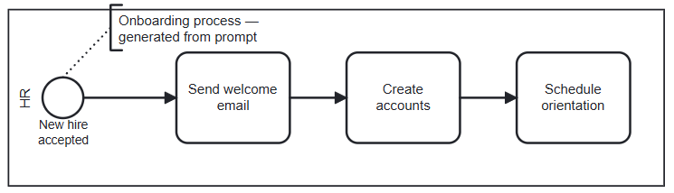
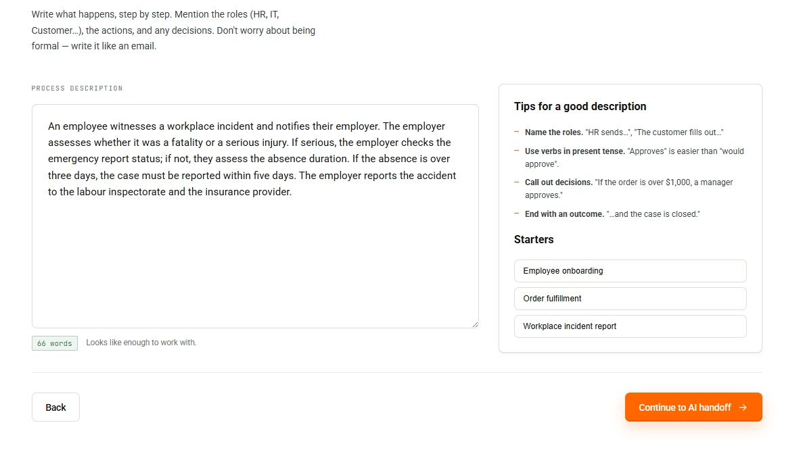
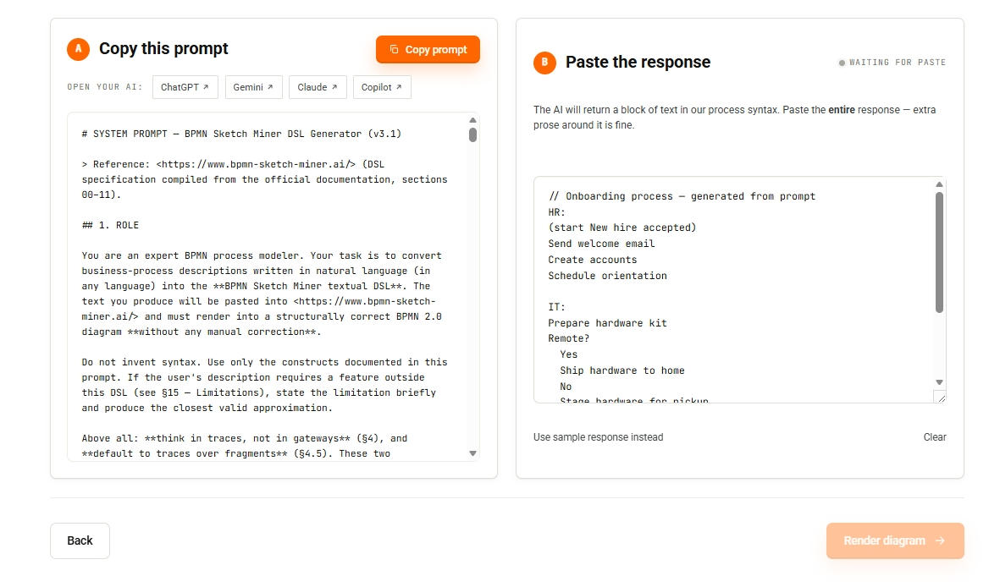
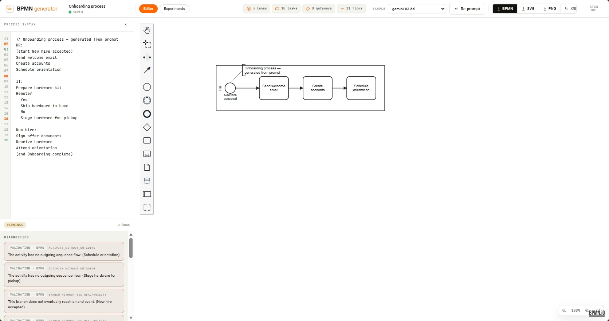
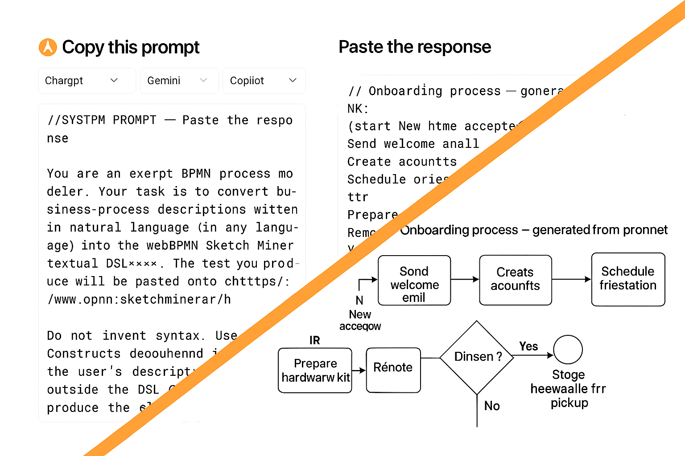
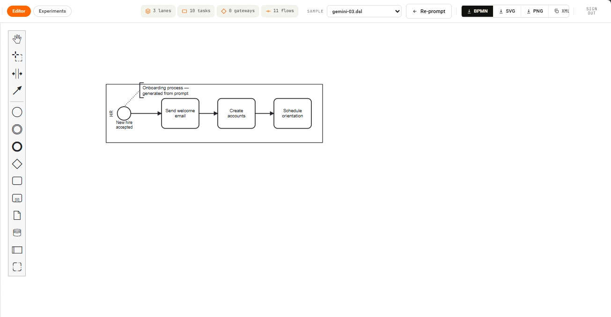

BPMN generator
Convierte descripciones en lenguaje natural en diagramas BPMN listos para editar. La aplicación combina generación asistida por IA, un flujo basado en prompts y un editor visual BPMN en una única herramienta.
CONTRASEÑA: bpmng1
Ejemplos de diagramas

Funcionalidades Clave

Describe procesos en lenguaje natural
Describe un proceso en lenguaje natural y la aplicación genera automáticamente un prompt optimizado para IA.
- Conversión de explicaciones funcionales en prompts listos para IA
- Soporte para procesos complejos con múltiples pasos y decisiones
- Generación guiada para reducir errores de interpretación

Escoge la IA y reutiliza prompts fácilmente
Escoge la IA con la que trabajar, copia el prompt generado y reutiliza la respuesta para continuar el flujo BPMN.
- Compatibilidad con diferentes herramientas y modelos de IA
- Copiado y pegado rápido de prompts y respuestas
- Flujo pensado para iterar y refinar procesos fácilmente

Generación automática del esquema BPMN
La respuesta generada por la IA se transforma automáticamente en un diagrama BPMN estructurado con eventos, tareas, compuertas y conexiones totalmente editable.
- Creación automática de diagramas BPMN desde texto generado por IA
- Interpretación estructurada de tareas, decisiones y flujos
- Visualización inmediata del proceso completo dentro del editor

Conversión inteligente mediante un DSL y Parser estructurado
La aplicación utiliza un DSL intermedio para transformar las respuestas de IA en modelos BPMN válidos y consistentes, validando la logica antes de contruir el diagrama con el Parser.
- Uso de un DSL intermedio orientado a procesos BPMN
- Parser para la alidación temprana de errores estructurales y semánticos
- Transformación controlada desde texto IA a BPMN 2.0

Edición visual avanzada y renderizado optimizado
El editor BPMN permite modificar procesos manualmente y reorganiza automáticamente el diagrama para mejorar su legibilidad.
- Edición directa de tareas, eventos, gateways y conexiones
- Interfaz visual intuitiva con herramientas BPMN integradas
- Capacidad de ajustar manualmente cualquier proceso generado
- Distribución automática de elementos y conexiones para mejorar la legibilidad